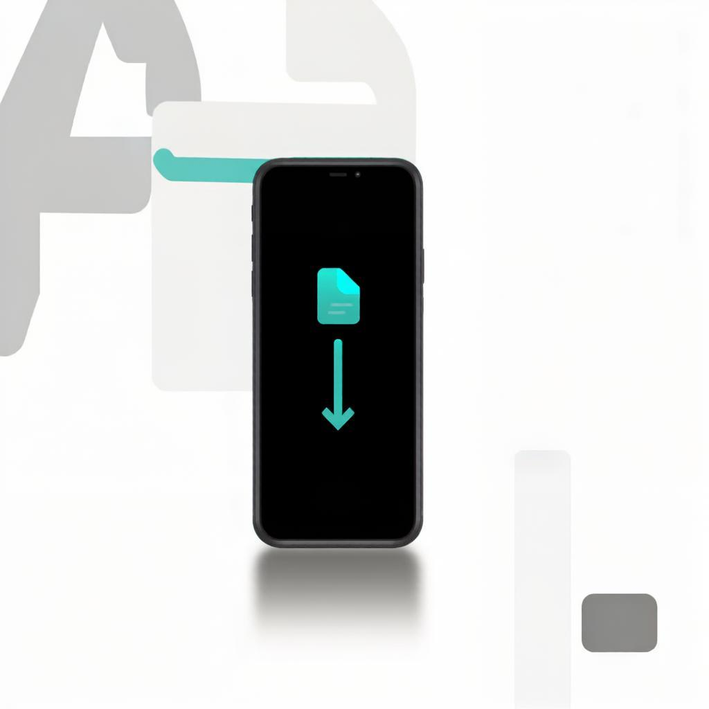
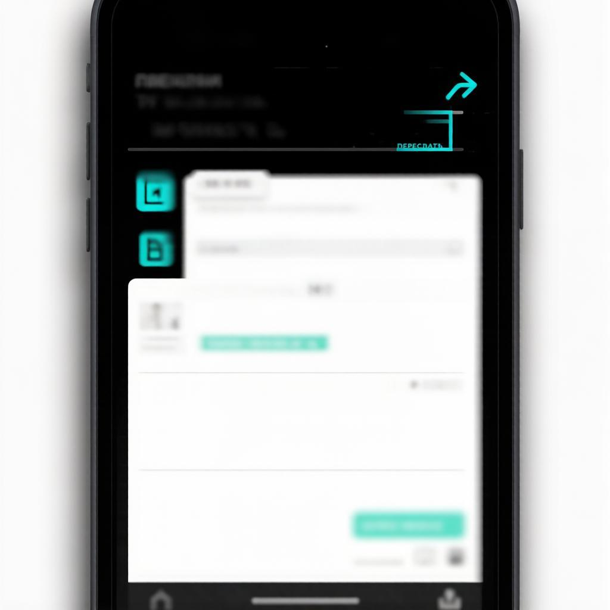
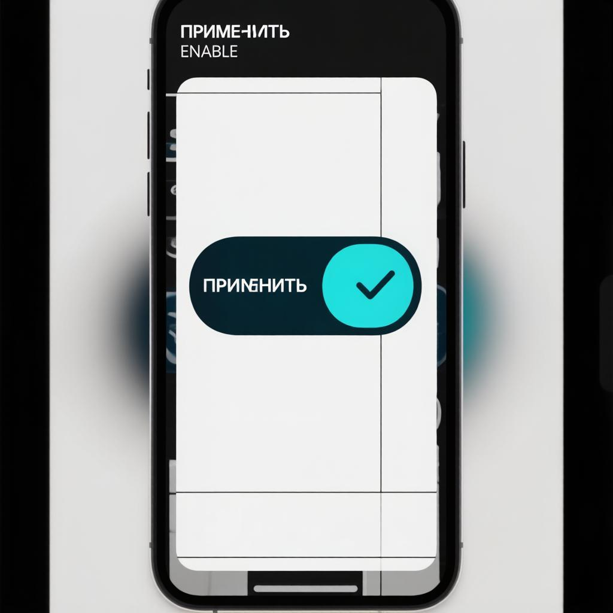

Шаг 1
Скачай файл темы
Нажми на странице темы кнопку «Скачать». Скачается файл с расширением .attheme. Он появится в загрузках телефона.

Шаг 2
Отправь себе в Telegram
Открой Telegram, перейди в «Избранное» (Saved Messages) и отправь туда файл .attheme — обычным вложением.

Шаг 3
Нажми «Применить»
Открой вложенный файл в Избранном. Telegram покажет превью темы и кнопку «Применить» — нажми её. Готово, тема активна.
Шаг 1
Скачай файл плагина
Нажми «Скачать» на странице плагина — получишь файл с расширением .plugin.
Шаг 2
Открой его в ExtraGram/AyuGram
Запусти клиент, открой Настройки → Плагины, нажми «Добавить плагин»/+ и выбери скачанный файл.

Шаг 3
Включи переключатель
После добавления включи тумблер рядом с плагином. Если нужна библиотека (например, ZwyLib) — сначала установи её.
Почему нет автоматической установки?
Telegram показывает экран подтверждения перед применением темы/плагина. Это встроенная защита — её нельзя обойти. Так что ручной клик всегда нужен.